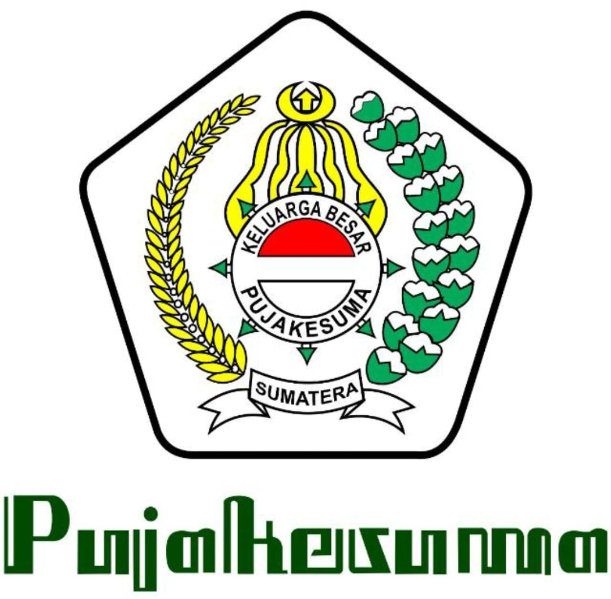
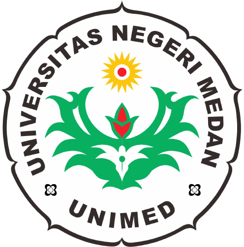

"Education"

2010-2016
SD Negeri 118395 Londut Labura
2016-2019
MTS Islamiyah Londut Labura

2019-2022
SMA Swasta Kesuma Bangsa Londut Labura

2022
Universitas Negeri Medan
Halo nama saya Rendy Derian, umur saya 19 tahun, saya berasal dari Aek kanopan Labuhan Batu Utara. saya anak ke 3 dari 4 bersaudara. selain itu saya punya satu funfact yg dimana tanggal lahir saya itu ada 2, kenapa ada 2? karena tanggal lahir asli saya yaitu 26 Desember 2004, Waktu dulu saya mau masuk SD kata kepala sekolah nya umur saya belum cukup untuk bersekolah, jadi disitulah tanggal lahir saya diubah ke 26 Febuari 2004 dan di akte kelahiran, ktp, dan kartu keluarga semua diubah
Public Speaking (indonesia dan Inggris);
Editing;
Videography;
Desain;
Cooking
2010-2016
SD Negeri 118395 Londut Labura
2016-2019
MTS Islamiyah Londut Labura
2019-2022
SMA Swasta Kesuma Bangsa Londut Labura
2022
Universitas Negeri Medan
Olimpiade Sains Kabupaten 2020;
Olimpiade Ospo Unimed 2020;
Olimpiade Sains Nasional USU 2021;
Marching Band;
Pramuka
untuk saat ini saya tidak bekerja, tapi pengalaman kerja saya yaitu saya bisa bekerja sama dengan tim dengan baik
"Satu-satunya cara untuk melakukakn pekerjaan yang hebat adalah dengan mencintai apa yang kamu lakukan"
Whatsapp : 082214264696
Instagram : @rendyderiian_
gmail : rendideriyan@gmail.com